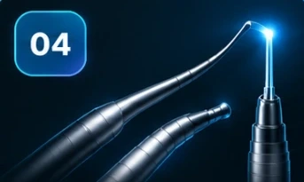
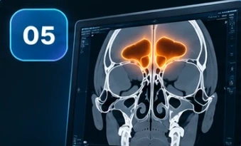

Shifokor sifatida Peshona cho'ntagini mustaqil va xatosiz tahlil qilishni
hamda Professor P. J. Wormaldni “Building block” konsepsiyasini qo'llashni o'rganasiz
hamda Professor P. J. Wormaldni “Building block” konsepsiyasini qo'llashni o'rganasiz
Peshona bo’shlig’i endoskopik operatsiya turlari hamda tabiiy teshigi anatomiyasi bilib olasiz
bo'yicha eng ishonchli kirishni o'zlashtirasiz

miya asosi va g'alvirsimon plastinkani shikastlash kabi xavflar hamda qo'rquvlarni bartaraf etasiz

xatosiz bajarib, kutilgan ijobiy natijaga erishasiz va bu malakangizni oshiradi
Tashxoqlik, noqulay protez va takroran shamollash bilan yashashda davom etasiz. Vaqt o’tgan sari muammo yanada kuchayadi.
Konsultatsiyaga yoziling, aniq holatingizdan kelib chiqib sizga to’g’ri davolash usulini taqdim qilaman.
2-yo’lni tanlaymanMan bilim pul sababli toxtab qolishini xoxlamiman bu bilimlani o'zlashtirishim uchun 5 tadan ortiq davlatlarda malaka oshirdim yillab vaqtim ketti bir nech ming dollarlab pul sarifladim
Bu darsni xech kimga bermaganman bu dars faqatgina narxi 5,000,000 som bolgan dasturim ichidagina bolgan
Shu sababli agar siz hoziroq bu darslani oladogan bosez sizga bor yog'i
Berayotgan darslarim sizga haqiqatan ham foyda berishiga va amaliyotda natija berishiga ishonaman.
Chunki maqsadim shunchaki dars o‘tish emas, balki sizga real ish jarayonida kerak bo‘ladigan bilimlarni berish.
Agar hali ham ikkilanayotgan bo‘lsangiz, quyida katta dasturimda o‘qigan hamkasblarimning fikrlarini qoldiraman.
O‘zingiz ko’rib chiqib, qaror qiling 👇
1) Quyidagi karta raqamiga ushbu to’lovni amalga oshirasiz: 97,000 so'm
2) To’lovingiz chekini rasmga olasiz
3) To'lov chekini pastdagi tugmani bosib, bizga yuborasiz.
Telegramga o'tish